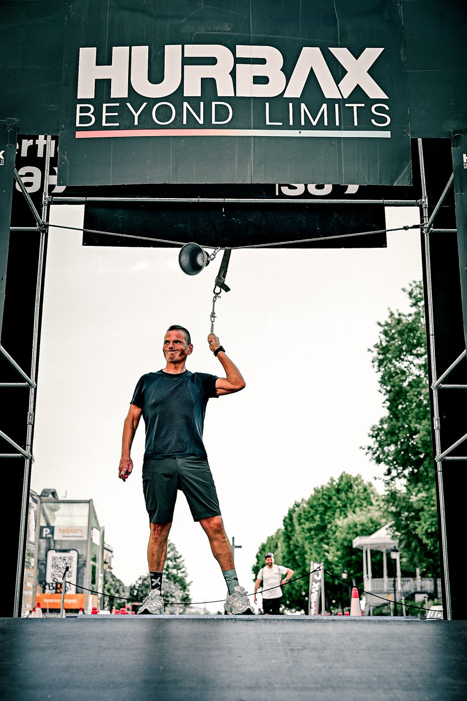
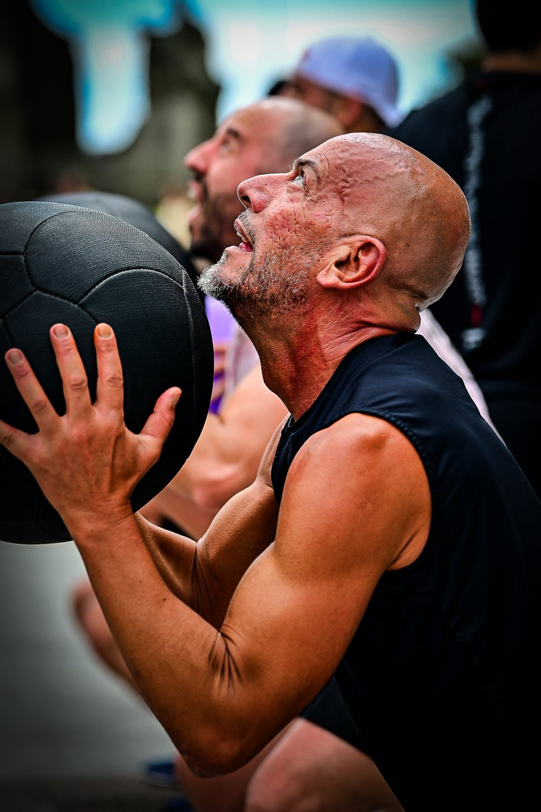

Hurbax brought its 2026 national circuit to Pontevedra on Saturday 16 May, staging its hybrid running-and-functional-fitness race along Avenida Montero Ríos, with event coverage by the Image Media team. Organised by Club Deportivo Básico Hurbax, it was the first time the circuit had held a competition in Galicia.
The format combines running with functional workout stations along a one-kilometre urban circuit, alternating rowing, wall balls, sandbag lunges, farmer's carry and burpee broad jumps over a total distance of roughly 5 kilometres. Athletes competed in individual, pairs and team categories, with distances and repetitions doubled for team entries, and separate age divisions applied. Racing began at 15:30 and ran until around 20:00.

More than 500 athletes registered for the event, with organisers reporting that the field was predominantly women. Results counted toward the standings of Spain's 2026 Hurbax national championship.

The race drew large crowds of spectators along the course, with local reporting describing the debut as a success in both participation and public turnout. Upcoming stops on the 2026 Hurbax circuit are scheduled for Oviedo, Gijón and Madrid.
The Image Media coverage team comprised Nemi, Luciano Inocencio, Willy Becker, Eduardo Pereira and Sergio Mendes.